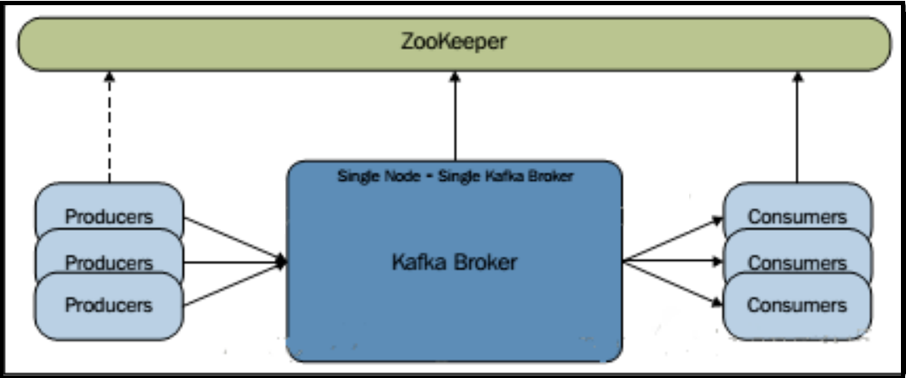

快速部署单机kafka集群（win环境）
1. 前言
本文不讲kafka集群原理，只谈部署步骤。
默认读者已对kafka有最基本的认知，纯粹作为部署笔记，方便回忆。
另外本文是基于Windows部署的，Linux的步骤是基本相同的（只是启动脚本位置不同）。
由于kafka的运行依赖于zookeeper，所以在运行kafka之前，需要先安装并运行zookeeper。不过本文没有使用kafka内置的zookeeper，而是使用《快速部署单机zookeeper集群（win环境）》里的zookeeper集群，但原理是相同的。
2. 环境
- JDK ： 1.8
- zookeeper ： 3.4.7
- zookeeper集群规模 ： 3
- kafka ： 2.12-2.0.0
- kafka集群类型： single broker（单节点单boker集群，亦即kafka只启一个broker消息中间件服务，producer、consumer、broker均通过zookeeper集群交换消息，具体可参考这篇文章：《kafka集群的三种部署方式》）
- kafka安装目录 ： %INSTALL_DIR% = E:\apache\apache-kafka （此处定义变量是为了下文方便说明，实际部署时应使用实际路径而非变量）

3. 安装
到kafka官网下载最新版：http://kafka.apache.org/
解压并重命名到 %INSTALL_DIR% 目录。
4. 配置
修改配置文件 %INSTALL_DIR%/config/log4j.properties ，找到参数 log4j.rootLogger ，在其前面一行添加如下参数（注意实际部署时把变量 %INSTALL_DIR% 改成实际路径）：
kafka.logs.dir=%INSTALL_DIR%/tmp/kafka-logs
修改配置文件 %INSTALL_DIR%/config/server.properties 的参数如下（注意实际部署时把变量 %INSTALL_DIR% 改成实际路径）：
broker.id=0
port=9092
host.name=localhost
log.dirs=%INSTALL_DIR%/tmp/kafka-logs
num.partitions=1
zookeeper.connect=localhost:2181,localhost:2182,localhost:2183
5. 运行
修改 %INSTALL_DIR%/bin/windows/kafka-run-class.bat 脚本，把其中的：
COMMAND=%JAVA% %KAFKA_HEAP_OPTS% %KAFKA_JVM_PERFORMANCE_OPTS% %KAFKA_JMX_OPTS% %KAFKA_LOG4J_OPTS% -cp %CLASSPATH% %KAFKA_OPTS% %*
修改为：
COMMAND=%JAVA% %KAFKA_HEAP_OPTS% %KAFKA_JVM_PERFORMANCE_OPTS% %KAFKA_JMX_OPTS% %KAFKA_LOG4J_OPTS% -cp "%CLASSPATH%" %KAFKA_OPTS% %*
亦即 "%CLASSPATH%" 需要增加双引号包围。
这是因为在Windows环境下，JDK安装的默认路径都是 C:\Program Files\Java ，而因为其中的 Program Files 有空格，会导致kafka启动时报错：
错误: 找不到或无法加载主类 Files\Java\jdk1.8.0_77\lib\dt.jar;C:\Program
然后在 %INSTALL_DIR% 目录下新建一个 run-kafka.bat 脚本，内容如下：
start ./bin/windows/kafka-server-start.bat ./config/server.properties
这样只需运行 run-kafka.bat 脚本，即可启动kafka （在此前需先启动zookeeper集群）。
至此 kafka部署完成。 > **[info]** 若要启动多个kafka，只需要复制server.properties配置文件，并修改其中的 broker.id、port 、log.dirs参数，确保它们全局唯一，然后通过kafka-server-start.bat脚本加载不同的server.properties配置文件即可（当然直接复制整套kafka程序也是也是可以的） ## 6. 创建主题（可选） 在 %INSTALL_DIR% 目录下新建一个 create-topic.bat 脚本，内容如下： > start ./bin/windows/kafka-topics.bat --create --zookeeper localhost:2181 --replication-factor 1 --partitions 1 --topic *自定义主题名称*在kafka运行期间调用这个脚本，即可创建一个消息主题（命令参数中只需指定zookeeper集群中任意一台机器即可）。
但是这种创建主题的方式比较麻烦，建议还是通过代码执行主题创建。而且这个版本的kafka默认是可以自动创建主题的，就更没有这个必要了。
7. 使用Java测试kafka消息发布/订阅
官方的Maven原生构件：
<dependency>
<groupId>org.apache.kafka</groupId>
<artifactId>kafka_2.12</artifactId>
<version>2.0.0</version>
</dependency>
<dependency>
<groupId>org.apache.kafka</groupId>
<artifactId>kafka-clients</artifactId>
<version>2.0.0</version>
</dependency>
生产者样例代码：
import java.util.Properties;
import org.apache.kafka.clients.producer.KafkaProducer;
import org.apache.kafka.clients.producer.ProducerConfig;
import org.apache.kafka.clients.producer.ProducerRecord;
import org.apache.kafka.common.serialization.StringSerializer;
/**
* <PRE>
* kafka生产者样例
* </PRE>
* <br/><B>PROJECT : </B> kafka
* <br/><B>SUPPORT : </B> <a href="http://www.exp-blog.com" target="_blank">www.exp-blog.com</a>
* @version 2018-08-02
* @author EXP: 272629724@qq.com
* @since jdk版本：jdk1.6
*/
public class DemoProducer {
public static void main(String[] args) throws Exception {
final String KAFKA_SOCKET = "127.0.0.1:9092";
final String TOPIC = "exp-topic-test";
DemoProducer producer = new DemoProducer(KAFKA_SOCKET);
producer.produce(TOPIC);
producer.close();
}
/** kafka生产者对象 */
private KafkaProducer<String, String> producer;
/**
* 构造函数
* @param kafkaSocket
*/
private DemoProducer(String kafkaSocket) {
Properties props = new Properties();
props.put(ProducerConfig.BOOTSTRAP_SERVERS_CONFIG, kafkaSocket);
props.put(ProducerConfig.VALUE_SERIALIZER_CLASS_CONFIG, StringSerializer.class.getName());
props.put(ProducerConfig.KEY_SERIALIZER_CLASS_CONFIG, StringSerializer.class.getName());
this.producer = new KafkaProducer<String, String>(props);
}
/**
* 连续发送消息到指定主题
* @param TOPIC 消息主题, 当主题只有一个分区时, 逻辑上可以认为主题是一个队列
* （当前版本的kafka默认会自动创建不存在的主题, 无需预建）
* @throws Exception
*/
public void produce(final String TOPIC) throws Exception {
for(int i = 0; i < 100; i++) {
String data = String.format("[%s] http://exp-blog.com", String.valueOf(i));
ProducerRecord<String, String> msg = new ProducerRecord<String, String>(TOPIC, data);
producer.send(msg);
Thread.sleep(10);
}
}
public void close() {
producer.close();
}
}
消费者样例代码：
import java.util.Arrays;
import java.util.Properties;
import org.apache.kafka.clients.consumer.Consumer;
import org.apache.kafka.clients.consumer.ConsumerConfig;
import org.apache.kafka.clients.consumer.ConsumerRecord;
import org.apache.kafka.clients.consumer.ConsumerRecords;
import org.apache.kafka.clients.consumer.KafkaConsumer;
import org.apache.kafka.common.serialization.StringSerializer;
/**
* <PRE>
* kafka消费者样例
* </PRE>
* <br/><B>PROJECT : </B> kafka
* <br/><B>SUPPORT : </B> <a href="http://www.exp-blog.com" target="_blank">www.exp-blog.com</a>
* @version 2018-08-02
* @author EXP: 272629724@qq.com
* @since jdk版本：jdk1.6
*/
public class DemoConsumer {
public static void main(String[] args) throws Exception {
final String KAFKA_SOCKET = "127.0.0.1:9092";
final String TOPIC = "exp-topic-test";
final String GROUP_ID = "group-1";
DemoConsumer consumer = new DemoConsumer(KAFKA_SOCKET, GROUP_ID);
consumer.consume(TOPIC);
}
/** kafka消费者对象 */
private Consumer<String, String> consumer;
/**
* 构造函数
* @param kafkaSocket
* @param groupId Consumer所在的Group
* （一个Topic可以对应多个Group, 不论是多播还是单播, kafka只会把消息发到Group,
* Consumer只能收到它所在的Group的消息）
*/
private DemoConsumer(String kafkaSocket, String groupId) {
Properties props = new Properties();
props.put(ConsumerConfig.BOOTSTRAP_SERVERS_CONFIG, kafkaSocket);
props.put(ConsumerConfig.GROUP_ID_CONFIG, groupId);
props.put(ConsumerConfig.AUTO_OFFSET_RESET_CONFIG, "latest"); // 消息偏移, latest表示最新的消息
props.put(ConsumerConfig.ENABLE_AUTO_COMMIT_CONFIG, "true"); // 自动提交
props.put(ConsumerConfig.AUTO_COMMIT_INTERVAL_MS_CONFIG, "1000"); // 自动提交间隔(ms)
props.put(ConsumerConfig.SESSION_TIMEOUT_MS_CONFIG, "30000"); // 会话超时(ms)
props.put(ConsumerConfig.KEY_DESERIALIZER_CLASS_CONFIG,
StringSerializer.class.getName());
props.put(ConsumerConfig.VALUE_DESERIALIZER_CLASS_CONFIG,
StringSerializer.class.getName());
this.consumer = new KafkaConsumer<String, String>(props);
}
/**
* 从指定主题连续消费消息
* @param TOPICS 消息主题集, 当主题只有一个分区时, 逻辑上可以认为主题是一个队列
* @throws Exception
*/
@SuppressWarnings("deprecation")
private void consume(final String... TOPICS) throws Exception {
consumer.subscribe(Arrays.asList(TOPICS)); // 可同时消费多个topic
while(true) {
ConsumerRecords<String, String> records = consumer.poll(1000);
for(ConsumerRecord<String, String> record : records) {
String msg = String.format("offset = %d, key = %s, value = %s",
record.offset(), record.key(), record.value());
System.out.printf(msg);
Thread.sleep(10);
}
}
}
public void close() {
consumer.close();
}
}
8. 附录1：kafka常见的错误与解决方法
Kafka运维填坑：https://www.jianshu.com/p/d2cbaae38014
9. 附录2：server.properties参数说明
| 参数与默认值 | 说明 |
|---|---|
| broker.id =0 | 每一个broker在集群中的唯一表示，要求是正数。当该服务器的IP地址发生 改变时，broker.id没有变化，则不会影响consumers的消息情况 |
| log.dirs=/data/kafka-logs | kafka数据的存放目录（必须是绝对路径），多个目录用逗号分割。 多个目录分布在不同磁盘上可以提高读写性能， 如： /data/kafka-logs-1，/data/kafka-logs-2 |
| port =9092 | broker server服务端口 |
| message.max.bytes =6525000 | 表示消息体的最大大小，单位是字节 |
| num.network.threads =4 | broker处理消息的最大线程数， 一般情况下数量为cpu核数 |
| num.io.threads =8 | broker处理磁盘IO的线程数，数值为cpu核数2倍 |
| background.threads =4 | 一些后台任务处理的线程数，例如过期消息文件的删除等， 一般情况下不需要去做修改 |
| queued.max.requests =500 | 等待IO线程处理的请求队列最大数，若是等待IO的请求超过这个数值， 那么会停止接受外部消息，应该是一种自我保护机制 |
| host.name | broker的主机地址，若是设置了，那么会绑定到这个地址上，若是没有， 会绑定到所有的接口上，并将其中之一发送到ZK，一般不设置 |
| socket.send.buffer.bytes=100*1024 | socket的发送缓冲区，socket的调优参数SO_SNDBUFF |
| socket.receive.buffer.bytes =100*1024 | socket的接受缓冲区，socket的调优参数SO_RCVBUFF |
| socket.request.max.bytes =100*1024*1024 | socket请求的最大数值，防止serverOOM，message.max.bytes必然要小于 socket.request.max.bytes，会被topic创建时的指定参数覆盖 |
| log.segment.bytes =1024*1024*1024 | topic的分区是以一堆segment文件存储的，这个控制每个segment的大小，会被 topic创建时的指定参数覆盖 |
| log.roll.hours =24*7 | 这个参数会在日志segment没有达到log.segment.bytes设置的大小， 也会强制新建一个segment会被topic创建时的指定参数覆盖 |
| log.cleanup.policy = delete | 日志清理策略选择有：delete和compact主要针对过期数据的处理， 或是日志文件达到限制的额度，会被topic创建时的指定参数覆盖 |
| log.retention.minutes=300或log.retention.hours=24 | 数据文件保留多长时间， 存储的最大时间超过这个时间会根据log.cleanup.policy设置数据清除策略。 有2种删除数据文件方式： ① 按文件大小删除：log.retention.bytes ② 按2种不同时间粒度删除：分钟log.retention.minutes、小时log.retention.hours |
| log.retention.bytes=-1 | topic每个分区的最大文件大小 一个topic的大小限制=分区数*log.retention.bytes -1表示没有大小限制。该参数会被topic创建时的指定参数覆盖 |
| log.retention.check.interval.ms=5minutes | 文件大小检查的周期时间，是否处罚log.cleanup.policy中设置的策略 |
| log.cleaner.enable=false | 是否开启日志清理 |
| log.cleaner.threads =2 | 日志清理运行的线程数 |
| log.cleaner.io.max.bytes.per.second=None | 日志清理时候处理的最大大小 |
| log.cleaner.dedupe.buffer.size=500*1024*1024 | 日志清理去重时候的缓存空间，在空间允许的情况下，越大越好 |
| log.cleaner.io.buffer.size=512*1024 | 日志清理时候用到的IO块大小一般不需要修改 |
| log.cleaner.io.buffer.load.factor =0.9 | 日志清理中hash表的扩大因子一般不需要修改 |
| log.cleaner.backoff.ms =15000 | 检查是否处罚日志清理的间隔 |
| log.cleaner.min.cleanable.ratio=0.5 | 日志清理的频率控制，越大意味着更高效的清理， 同时会存在一些空间上的浪费，会被topic创建时的指定参数覆盖 |
| log.cleaner.delete.retention.ms =1day | 对于压缩的日志保留的最长时间，也是客户端消费消息的最长时间，同 log.retention.minutes的区别在于一个控制未压缩数据，一个控制压缩后的数据。 会被topic创建时的指定参数覆盖 |
| log.index.size.max.bytes =10*1024*1024 | 对于segment日志的索引文件大小限制，会被topic创建时的指定参数覆盖 |
| log.index.interval.bytes =4096 | 当执行一个fetch操作后，需要一定的空间来扫描最近的offset大小， 设置越大，代表扫描速度越快，但是也更好内存，一般情况下不需要配置这个参数 |
| log.flush.interval.messages=None | log文件“sync”到磁盘之前累积的消息条数，例如log.flush.interval.messages=1000表示每当消息记录数达到1000时flush一次数据到磁盘。 因为磁盘IO操作是一个慢操作，但又是一个“数据可靠性”的必要手段， 所以此参数的设置，需要在“数据可靠性”与“性能”之间做必要的权衡。 如果此值过大，将会导致每次“fsync”的时间较长（IO阻塞）， 如果此值过小，将会导致“fsync”的次数较多，这也意味着整体的client请求有一定的延迟。 物理server故障，将会导致没有fsync的消息丢失 |
| log.flush.scheduler.interval.ms =3000 | 检查是否需要固化到硬盘的时间间隔 |
| log.flush.interval.ms = None | 仅仅通过interval来控制消息的磁盘写入时机是不够的。 此参数用于控制“fsync”的时间间隔，如果消息量始终没有达到阀值，但是离 上一次磁盘同步的时间间隔达到阀值，也将触发。例如：log.flush.interval.ms=1000表示每间隔1000毫秒flush一次数据到磁盘 |
| log.delete.delay.ms =60000 | 文件在索引中清除后保留的时间一般不需要去修改 |
| log.flush.offset.checkpoint.interval.ms =60000 | 控制上次固化硬盘的时间点，以便于数据恢复一般不需要去修改 |
| auto.create.topics.enable =true | 是否允许自动创建topic，若是false，就需要通过命令创建topic |
| default.replication.factor =1 | 是否允许自动创建topic，若是false，就需要通过命令创建topic |
| num.partitions =1 | 每个topic的分区个数，若是在topic创建时候没有指定 则会被topic创建时的指定参数覆盖 |
| controller.socket.timeout.ms =30000 | partition leader与replicas之间通讯时，socket的超时时间 |
| controller.message.queue.size=10 | partition leader与replicas数据同步时，消息的队列尺寸 |
| replica.lag.time.max.ms =10000 | replicas响应partition leader的最长等待时间，若是超过这个时间， 就将replicas列入ISR(in-sync replicas)，并认为它是死的，不会再加入管理中 |
| replica.lag.max.messages =4000 | 如果follower落后与leader太多，将会认为此follower（或者说partition relicas）已经失效。通常，在follower与leader通讯时，因为网络延迟或者链接断开， 总会导致replicas中消息同步滞后。如果消息之后太多，leader将认为此follower网络延迟较大或者消息吞吐能力有限，将会把此replicas迁移到其他follower中。 在broker数量较少，或者网 络不足的环境中，建议提高此值 |
| replica.socket.timeout.ms=30*1000 | follower与leader之间的socket超时时间 |
| replica.socket.receive.buffer.bytes=64*1024 | leader复制时候的socket缓存大小 |
| replica.fetch.max.bytes =1024*1024 | replicas每次获取数据的最大大小 |
| replica.fetch.wait.max.ms =500 | replicas同leader之间通信的最大等待时间，失败了会重试 |
| replica.fetch.min.bytes =1 | fetch的最小数据尺寸，如果leader中尚未同步的数据不足此值， 将会阻塞直到满足条件 |
| num.replica.fetchers=1 | leader进行复制的线程数，增大这个数值会增加follower的IO |
| replica.high.watermark.checkpoint.interval.ms =5000 | 每个replica检查是否将最高水位进行固化的频率 |
| controlled.shutdown.enable =false | 是否允许控制器关闭broker，若是设置为true， 会关闭所有在这个broker上的leader，并转移到其他broker |
| controlled.shutdown.max.retries =3 | 控制器关闭的尝试次数 |
| controlled.shutdown.retry.backoff.ms =5000 | 每次关闭尝试的时间间隔 |
| leader.imbalance.per.broker.percentage =10 | leader的不平衡比例，若是超过这个数值，会对分区进行重新的平衡 |
| leader.imbalance.check.interval.seconds =300 | 检查leader是否不平衡的时间间隔 |
| offset.metadata.max.bytes | 客户端保留offset信息的最大空间大小 |
| zookeeper.connect = localhost:2181 | zookeeper集群的地址（连接串），可以是多个，多个之间用逗号分割。 例如：hostname1:port1,hostname2:port2,hostname3:port3 |
| zookeeper.session.timeout.ms=6000 | zooKeeper的最大超时时间，就是心跳的间隔。 若是没有反应，那么认为已经死了，因此该值不易过大 |
| zookeeper.connection.timeout.ms =6000 | zooKeeper的连接超时时间 |
| zookeeper.sync.time.ms =2000 | zooKeeper集群中leader和follower之间的同步时间 |